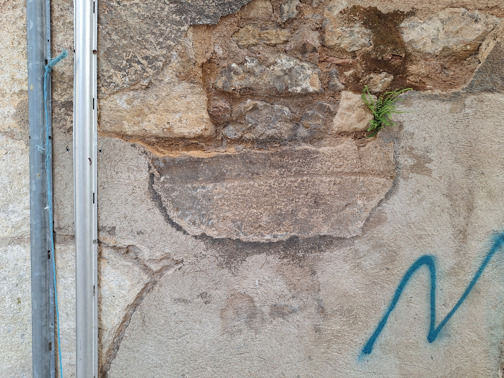

producing a place
producing a place
U:TOPOS does not emerge where a place for an artwork has been determined in advance.
A physical place can be accidental. A city, a street, a room, a wall, a route — all of these already exist before us, and none of them guarantees anything in itself. A work does not acquire a place simply because it has been put somewhere.
A place emerges at the moment when an action, an environment, time, and someone’s presence enter into relation.
Each realisation, therefore, does not take place within U:TOPOS. It produces U:TOPOS.
This production is unstable. It may or may not occur. It may last for a few minutes, a few days, or remain only as a trace. The point that emerges does not become a permanent centre. It fades, shifts, repeats elsewhere, emerges again in another situation.
U:TOPOS is not formed by the sum of such points as elements of a collection. It is not a collection of works, instructions, or versions. It exists only through the acts of emergence themselves.
In this sense, the question “where?” remains open each time.
The answer is not contained in an address.
A place is not found.
It is produced.

You should also read:

situation de déplacement
situation de déplacement Displacement is not only a biographical theme. In u:topos : biennale, works, languages, instructions, routes and forms of presence move from one state to another. The biennale does not appear as a single space of contemplation, but as a distributed situation of…
continuer le passage...